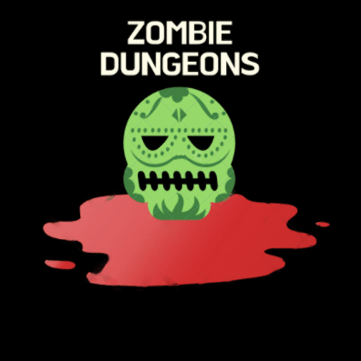

Zombie Dungeons
 Zombie Dungeons is a 3D videogame that takes place in a post-apocalyptic world where the main character is a survivor that needs to save the world by searching for the cure for the alien disease that turns infected people into zombies in secret government bunkers within Area 51.
This is a third-person shooter game with the goal of surviving a certain amount of time and killing all of the enemies that have spawned. After these two are achieved, a key for the next dungeon will spawn. The player can fight his enemies with a weapon. In order to manage deaths and game progression, the player will have a health bar, which will take damage once he is attacked by an enemy (touched) and will never regenerate unless the player wins the game or dies and restarts the game. Addressing movement, the player’s character moves at a set, constant speed, and is able to jump.
Mastered abilities
- Unity
- C#
- Basic AI for NPCs
- External Physics Libraries Usage
- GDD Creation (Game Design Document)
- 3D Game Asset Modeling (characters, structures)